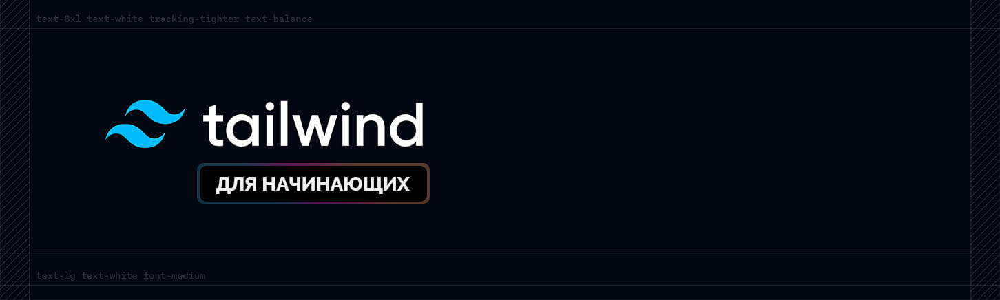
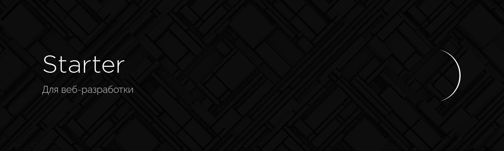
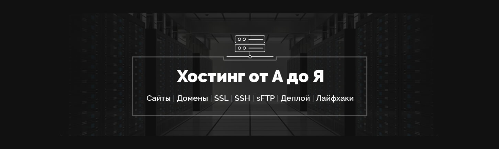
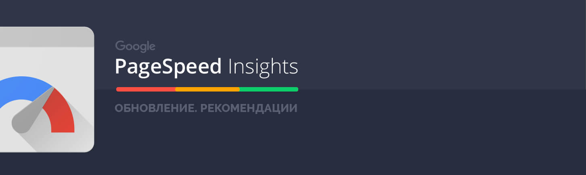

Курсы
Инструменты
Настройка Parcel для веб-разработки

Tailwind CSS для начинающих. Подробный урок по подключению, настройке и использованию
Настройка VS Code для веб-разработки

Starter - Простой стартер для веб-разработки

Урок по хостингу от А до Я. Сайты, базы, домены, SSL, SSH, sFTP
Gulp - Актуальное и исчерпывающее руководство для самых маленьких
Актуальный способ установки и настройки окружения Windows WSL для веб-разработки

Оптимизация сайта от А до Я
OptimizedHTML 5 - Облегченный стартер для верстки сайтов
Отложенная загрузка изображений Lazy Load на сайте
Назад
1 из 3
Вперед